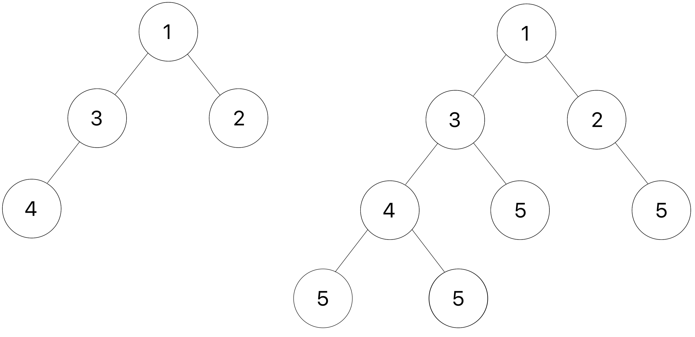

Homework 5 Solutions
Solution Files
You can find the solutions in hw05.py.
Required Questions
Getting Started Videos
These videos may provide some helpful direction for tackling the coding problems on this assignment.
To see these videos, you should be logged into your berkeley.edu email.
Inheritance
Election
Let's implement a game called Election. In this game, two players compete to try and earn the most votes. Both players start with 0 votes and 100 popularity.
The two players alternate turns, and the first player starts. Each turn, the current player chooses an action. There are two types of actions:
- The player can debate, and either gain or lose 50 popularity. If the player
has popularity
p1and the other player has popularityp2, then the probability that the player gains 50 popularity ismax(0.1, p1 / (p1 + p2))Note that themaxhere ensures that the probability is never lower than 0.1. - The player can give a speech. If the player has popularity
p1and the other player has popularityp2, then the player gainsp1 // 10votes and popularity and the other player losesp2 // 10popularity.
The game ends when a player reaches 50 votes, or after a total of 10 turns have been played (each player has taken 5 turns). Whoever has more votes at the end of the game is the winner!
Q1: Player
First, let's implement the Player class. Fill in the debate and speech
methods, that take in another Player other, and implement the correct
behavior as detailed above. Here are a few additional things to keep in mind:
- Each player carries a random number generator (the
random_funcinstance attribute), which is a function that returns a random float between 0 and 1 when called. - In the
debatemethod, you should call therandom_funcfunction to get a random number. The player should gain 50 popularity if the random number is smaller than the probability described above, and lose 50 popularity otherwise. - Neither players' popularity should ever become negative. If this happens, set it equal to 0 instead.
### Phase 1: The Player Class
class Player:
"""
>>> random = make_test_random()
>>> p1 = Player('Hill', random)
>>> p2 = Player('Don', random)
>>> p1.popularity
100
>>> p1.debate(p2) # random() should return 0.0
>>> p1.popularity
150
>>> p2.popularity
100
>>> p2.votes
0
>>> p2.speech(p1)
>>> p2.votes
10
>>> p2.popularity
110
>>> p1.popularity
135
>>> p1.speech(p2)
>>> p1.votes
13
>>> p1.popularity
148
>>> p2.votes
10
>>> p2.popularity
99
>>> for _ in range(4): # 0.1, 0.2, 0.3, 0.4
... p1.debate(p2)
>>> p2.debate(p1)
>>> p2.popularity
49
>>> p2.debate(p1)
>>> p2.popularity
0
"""
def __init__(self, name, random_func):
self.name = name
self.votes = 0
self.popularity = 100
self.random_func = random_func
def debate(self, other):
prob = max(0.1, self.popularity / (self.popularity + other.popularity))
if self.random_func() < prob:
self.popularity += 50
else:
self.popularity = max(0, self.popularity - 50)
def speech(self, other):
self.votes += self.popularity // 10
self.popularity += self.popularity // 10
other.popularity = max(0, other.popularity - (other.popularity // 10))
def choose(self, other):
return self.speechUse Ok to test your code:
python3 ok -q PlayerQ2: Game
Now, implement the Game class. Fill in the play method, which should
alternate between the two players, starting with p1, and have each player take
one turn at a time. The choose method in the Player class returns the
method, either debate or speech, that should be called to perform the
action.
In addition, fill in the winner method, which should return the
player with more votes, or None if the players are tied.
### Phase 2: The Game Class
class Game:
"""
>>> random = make_test_random()
>>> p1, p2 = Player('Hill',random), Player('Don', random)
>>> g = Game(p1, p2)
>>> winner = g.play()
>>> p1 is winner
True
>>> # Additional correctness tests
>>> winner is g.winner()
True
>>> g.turn
10
>>> p1.votes = p2.votes
>>> print(g.winner())
None
"""
def __init__(self, player1, player2):
self.p1 = player1
self.p2 = player2
self.turn = 0
def play(self):
while not self.game_over():
if self.turn % 2 == 0:
curr, other = self.p1, self.p2
else:
curr, other = self.p2, self.p1
curr.choose(other)(other)
self.turn += 1 return self.winner()
def game_over(self):
return max(self.p1.votes, self.p2.votes) >= 50 or self.turn >= 10
def winner(self):
if self.p1.votes > self.p2.votes:
return self.p1
elif self.p2.votes > self.p1.votes:
return self.p2
else:
return NoneUse Ok to test your code:
python3 ok -q GameQ3: New Players
The choose method in the Player class is boring, because it always returns
the speech method. Let's implement two new classes that inherit from Player,
but have more interesting choose methods.
Implement the choose method in the AggressivePlayer class, which returns the
debate method if the player's popularity is less than or equal to other's
popularity, and speech otherwise. Also implement the choose method in the
CautiousPlayer class, which returns the debate method if the player's
popularity is 0, and speech otherwise.
### Phase 3: New Players
class AggressivePlayer(Player):
"""
>>> random = make_test_random()
>>> p1, p2 = AggressivePlayer('Don', random), Player('Hill', random)
>>> g = Game(p1, p2)
>>> winner = g.play()
>>> p1 is winner
True
>>> # Additional correctness tests
>>> p1.popularity = p2.popularity
>>> p1.choose(p2) == p1.debate
True
>>> p1.popularity += 1
>>> p1.choose(p2) == p1.debate
False
>>> p2.choose(p1) == p2.speech
True
"""
def choose(self, other):
if self.popularity <= other.popularity:
return self.debate
else:
return self.speechUse Ok to test your code:
python3 ok -q AggressivePlayerclass CautiousPlayer(Player):
"""
>>> random = make_test_random()
>>> p1, p2 = CautiousPlayer('Hill', random), AggressivePlayer('Don', random)
>>> p1.popularity = 0
>>> p1.choose(p2) == p1.debate
True
>>> p1.popularity = 1
>>> p1.choose(p2) == p1.debate
False
>>> # Additional correctness tests
>>> p2.choose(p1) == p2.speech
True
"""
def choose(self, other):
if self.popularity == 0:
return self.debate
else:
return self.speechUse Ok to test your code:
python3 ok -q CautiousPlayerMutable Trees
Q4: Add Leaves
Implement add_d_leaves, a function that takes in a Tree instance t and a number v.
We define the depth of a node in t to be the number of edges from the root to that node. The depth of root is therefore 0.
For each node in the tree, you should add d leaves to it, where d is the depth of the node. Every added leaf should have a label of v. If the node at this depth has existing branches, you should add these leaves to the end of that list of branches.
For example, you should be adding 1 leaf with label v to each node at depth 1, 2 leaves to each node at depth 2, and so on.
Here is an example of a tree t(shown on the left) and the result after add_d_leaves is applied with v as 5.

Hint: Use a helper function to keep track of the depth!
Take a look at the doctests below and try drawing out the second doctest to visualize how the function is mutating
t3.
def add_d_leaves(t, v):
"""Add d leaves containing v to each node at every depth d.
>>> t_one_to_four = Tree(1, [Tree(2), Tree(3, [Tree(4)])])
>>> print(t_one_to_four)
1
2
3
4
>>> add_d_leaves(t_one_to_four, 5)
>>> print(t_one_to_four)
1
2
5
3
4
5
5
5
>>> t0 = Tree(9)
>>> add_d_leaves(t0, 4)
>>> t0
Tree(9)
>>> t1 = Tree(1, [Tree(3)])
>>> add_d_leaves(t1, 4)
>>> t1
Tree(1, [Tree(3, [Tree(4)])])
>>> t2 = Tree(2, [Tree(5), Tree(6)])
>>> t3 = Tree(3, [t1, Tree(0), t2])
>>> print(t3)
3
1
3
4
0
2
5
6
>>> add_d_leaves(t3, 10)
>>> print(t3)
3
1
3
4
10
10
10
10
10
10
0
10
2
5
10
10
6
10
10
10
"""
def add_leaves(t, d):
for b in t.branches:
add_leaves(b, d + 1)
t.branches.extend([Tree(v) for _ in range(d)])
add_leaves(t, 0)Use Ok to test your code:
python3 ok -q add_d_leavesQ5: Level Mutation Link
As a reminder, the depth of a node is defined as the number of edges from the root to the node. Therefore, the root itself has a depth of 0 since there are no edges between the root and itself.
Given a tree t and a linked list of one-argument functions funcs, write a function that mutates the labels of t using the functions from funcs at the corresponding depths. For example:
- The label at the root node (depth 0) will be mutated using the function at depth 0 of
funcs(funcs.first). - The label at the first level of the tree will be mutated using the function at depth 1 of
funcs(funcs.rest.first), and so on.
Each function in funcs takes in a label value and returns a valid label value.
If a node is a leaf and there are remaining functions in funcs, all of these remaining functions should be applied in order to the label of the leaf node. If funcs is empty, the tree should remain unmodified.
Please refer to the doctests for examples.
def level_mutation_link(t, funcs):
"""Mutates t using the functions in the linked list funcs.
>>> t = Tree(1, [Tree(2, [Tree(3)])])
>>> funcs = Link(lambda x: x + 1, Link(lambda y: y * 5, Link(lambda z: z ** 2)))
>>> level_mutation_link(t, funcs)
>>> t # At level 0, apply x + 1; at level 1, apply y * 5; at level 2 (leaf), apply z ** 2
Tree(2, [Tree(10, [Tree(9)])])
>>> t2 = Tree(1, [Tree(2), Tree(3, [Tree(4)])])
>>> level_mutation_link(t2, funcs)
>>> t2 # Level 0: 1+1=2; Level 1: 2*5=10 => 10**2 = 100, 3*5=15; Level 2 (leaf): 4**2=16
Tree(2, [Tree(100), Tree(15, [Tree(16)])])
>>> t3 = Tree(1, [Tree(2)])
>>> level_mutation_link(t3, funcs)
>>> t3 # Level 0: 1+1=2; Level 1: 2*5=10; no further levels, so apply remaining z ** 2: 10**2=100
Tree(2, [Tree(100)])
"""
if funcs is Link.empty: return
t.label = funcs.first(t.label) remaining = funcs.rest if t.is_leaf() and remaining is not Link.empty: while remaining is not Link.empty: t.label = remaining.first(t.label) remaining = remaining.rest
for b in t.branches:
level_mutation_link(b, remaining)Use Ok to test your code:
python3 ok -q level_mutation_linkLinked Lists
Q6: Store Digits
Write a function store_digits that takes in an integer n and returns
a linked list where each element of the list is a digit of n.
Important: Do not use any string manipulation functions like
strandreversed.
def store_digits(n):
"""Stores the digits of a positive number n in a linked list.
>>> s = store_digits(1)
>>> s
Link(1)
>>> store_digits(2345)
Link(2, Link(3, Link(4, Link(5))))
>>> store_digits(876)
Link(8, Link(7, Link(6)))
>>> store_digits(2450)
Link(2, Link(4, Link(5, Link(0))))
>>> # a check for restricted functions
>>> import inspect, re
>>> cleaned = re.sub(r"#.*\\n", '', re.sub(r'"{3}[\s\S]*?"{3}', '', inspect.getsource(store_digits)))
>>> print("Do not use str or reversed!") if any([r in cleaned for r in ["str", "reversed"]]) else None
"""
result = Link.empty
while n > 0:
result = Link(n % 10, result)
n //= 10
return resultUse Ok to test your code:
python3 ok -q store_digitsQ7: Mutable Mapping
Implement deep_map_mut(func, link), which applies a function func onto
all elements in the given linked list lnk. If an element is itself a
linked list, apply func to each of its elements, and so on.
Your implementation should mutate the original linked list. Do not create any new linked lists.
Hint: The built-in
isinstancefunction may be useful.>>> s = Link(1, Link(2, Link(3, Link(4)))) >>> isinstance(s, Link) True >>> isinstance(s, int) False
Construct Check: The last doctest of this question ensures that you do not create new linked lists. If you are failing this doctest, ensure that you are not creating link lists by calling the constructor, i.e.
s = Link(1)
def deep_map_mut(func, lnk):
"""Mutates a deep link lnk by replacing each item found with the
result of calling func on the item. Does NOT create new Links (so
no use of Link's constructor).
Does not return the modified Link object.
>>> link1 = Link(3, Link(Link(4), Link(5, Link(6))))
>>> print(link1)
<3 <4> 5 6>
>>> # Disallow the use of making new Links before calling deep_map_mut
>>> Link.__init__, hold = lambda *args: print("Do not create any new Links."), Link.__init__
>>> try:
... deep_map_mut(lambda x: x * x, link1)
... finally:
... Link.__init__ = hold
>>> print(link1)
<9 <16> 25 36>
"""
if lnk is Link.empty:
return
elif isinstance(lnk.first, Link):
deep_map_mut(func, lnk.first)
else:
lnk.first = func(lnk.first)
deep_map_mut(func, lnk.rest)Use Ok to test your code:
python3 ok -q deep_map_mutCheck Your Score Locally
You can locally check your score on each question of this assignment by running
python3 ok --scoreThis does NOT submit the assignment! When you are satisfied with your score, submit the assignment to Gradescope to receive credit for it.
Submit Assignment
Submit this assignment by uploading any files you've edited to the appropriate Gradescope assignment. Lab 00 has detailed instructions.
Extra Credit (1 pt)
During Office Hours and Project Parties, the staff will prioritize helping students with required questions. We will not be offering help with this question unless the queue is empty.
Note: To get credit for the extra credit question, you must submit to the extra credit assignment on Gradescope. This is separate from the main assignment on Gradescope.
Q8: Dr. Doudna's CRISPR Links
To simulate experiments with her recently discovered CRISPR Cas-9 technique, Nobel Laureate and UC Berkeley Professor Dr. Jennifer Doudna wishes to create a computational template for CRISPR insertions into certain genes. For this, she has approached the 61A students and staff for help in constructing a mechanism to enable these simulations. She has offered to provide a bank of test genes as well as the DNA sequence she wishes to insert into those genes.
Part A Write a function crispr_gene_insertion that takes in a string insert, a single codon sequence of 3 characters, and a nested linked list lnk_of_genes, containing a linked list of genes. Each gene is itself a linked list containing a sequence of codons which are strings of 3 characters that represent DNA units.
Add the insert codon exactly i + 1 times after the start codon (“AUG”) in each gene, where i refers to the index of the gene in the linked list lnk_of_genes.
Definitions:
- Codon: a string of 3 characters(triplet), made from A, T, G, C, that represent DNA units (e.g. “ACG”, “GTT”)
- Gene: a sequence of codons
- Start codon: “AUG”
def crispr_gene_insertion(lnk_of_genes, insert):
"""Takes a linked list of genes and mutates the genes with the INSERT codon added the correct number of times.
>>> link = Link(Link("AUG", Link("GCC", Link("ACG"))), Link(Link("ATG", Link("AUG", Link("ACG", Link("GCC"))))))
>>> print(link)
<<AUG GCC ACG> <ATG AUG ACG GCC>>
>>> crispr_gene_insertion(link, "TTA")
>>> print(link)
<<AUG TTA GCC ACG> <ATG AUG TTA TTA ACG GCC>>
>>> link = Link(Link("ATG"), Link(Link("AUG", Link("AUG")), Link(Link("AUG", Link("GCC")))))
>>> print(link)
<<ATG> <AUG AUG> <AUG GCC>>
>>> crispr_gene_insertion(link, "TTA") # first gene has no AUG so unchanged, 2nd gene has 2 AUGs but only first considered for insertion
>>> print(link)
<<ATG> <AUG TTA TTA AUG> <AUG TTA TTA TTA GCC>>
>>> link = Link.empty # empty linked list of genes stays empty
>>> crispr_gene_insertion(link, "TTA")
>>> print(link)
()
"""
def gene_inserter(gene, index, flag):
if gene is Link.empty or index == 0:
return gene
if flag:
return Link(insert, gene_inserter(gene, index-1, flag))
if gene.first == "AUG":
return Link(gene.first, gene_inserter(gene.rest, index, True))
else:
return Link(gene.first, gene_inserter(gene.rest,index, flag))
index = 0
while lnk_of_genes is not Link.empty:
lnk_of_genes.first = gene_inserter(lnk_of_genes.first, index + 1, False)
lnk_of_genes = lnk_of_genes.rest
index += 1
# ALTERNATE SOLUTION
def crispr_gene_insertion(lnk_of_genes, insert):
def helper(lnk, index):
if lnk is Link.empty:
return
curr = lnk.first
while curr is not Link.empty and curr.first != "AUG":
curr = curr.rest
if curr is not Link.empty:
for i in range(index + 1):
curr.rest = Link(insert, curr.rest)
helper(lnk.rest, index + 1)
helper(lnk_of_genes, 0)Use Ok to test your code:
python3 ok -q crispr_gene_insertionPart B Now that Dr. Doudna has got her CRISPR-edited genes, she wants to convert the DNA sequences into RNA triplets. Transcribing involves converting DNA to RNA. Write a function transcribe that takes in a string dna, and returns a new Python list representing the RNA codons (triplets) sequence obtained by transcribing the DNA sequence. Assume that the length of dna is always a multiple of 3.
Additionally, you have a dictionary dict that maps DNA bases to their corresponding RNA bases for transcription. This is already added to your function.
dict = {'A': 'U', 'T': 'A', 'G': 'C', 'C': 'G'}
Example: if dna = 'ATG':
dict['A'] = 'U'
dict['T'] = 'A'
dict['G'] = 'C'
transcribe(dna) = ['UAC']Note: It may be helpful to use the
range(start, stop, step)function — E.g.list(range(1,10,2))creates the list[1, 3, 5, 7, 9]
def transcribe(dna):
"""Takes a string of DNA and returns a Python list with the RNA codons.
>>> DNA = "TACCTAGCCCATAAA"
>>> transcribe(DNA)
['AUG', 'GAU', 'CGG', 'GUA', 'UUU']
"""
dict = {'A': 'U', 'T': 'A', 'G': 'C', 'C': 'G'}
return [dict[dna[i]] + dict[dna[i+1]] + dict[dna[i+2]] for i in range(0, len(dna), 3)]Use Ok to test your code:
python3 ok -q transcribeExam Practice
Homework assignments will also contain prior exam questions for you to try. These questions have no submission component; feel free to attempt them if you'd like some practice!
Object-Oriented Programming
- Spring 2022 MT2 Q8: CS61A Presents The Game of Hoop.
- Fall 2020 MT2 Q3: Sparse Lists
- Fall 2019 MT2 Q7: Version 2.0
Linked Lists
- Fall 2020 Final Q3: College Party
- Fall 2018 MT2 Q6: Dr. Frankenlink
- Spring 2017 MT1 Q5: Insert